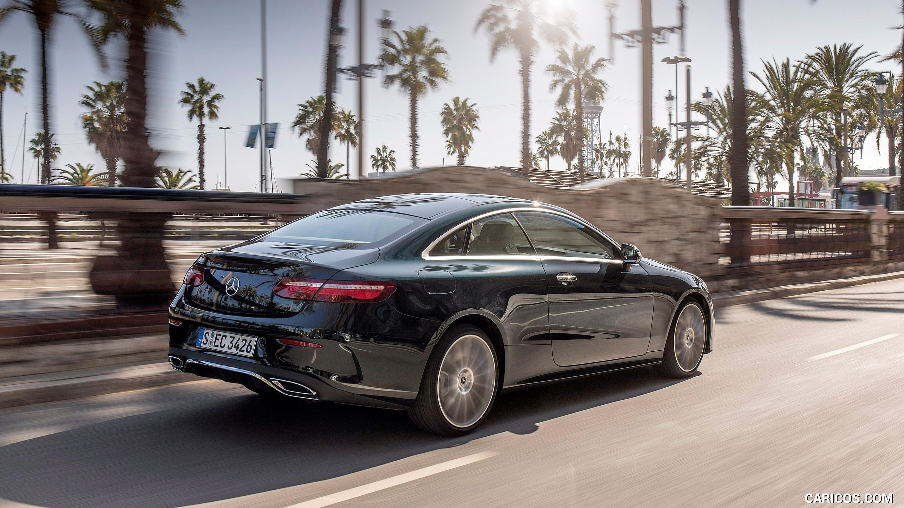

Mercedes S-Class
Mercedes S-Class facelift primește un update tehnic și stilistic important, prezentat la Salonul Auto de la Shanghai. În prim plan, motoare mai puternice și noi funcții de conducere semi-autonomă Intelligent Drive.
Interiorul aduce mai multe noutăți, printre care configurația cu ecrane duale găzduite acum sub o suprafață unitară din sticlă. Display-ul central de mari dimensiuni are aceeași diagonală de 12,3 inchi, însă blocul de comenzi fizice care îl separa de ecranul TFT din spatele volanului, identic ca diagonală, a dispărut.
S-Class facelift a primit și un volan nou cu trei spițe și două suprafețe tactile care permit operarea sistemului Comand. Iluminarea ambientală oferă acum 64 combinații cromatice, iar cadranele de bord digitale pot fi configurate în trei moduri distincte de afișare: Classic, Sport și Progressive.
De îmbunătățiri consistente se bucură și funcțiile de conducere semi-autonomă, reunite sub umbrela pachetului de tehnologii Intelligent Drive. Funcțiile Active Distance Assist Distronic și Active Steering Assist au fost îmbunătățite, S-Class fiind capabilă să mențină direcția și distanța inclusiv când virează, iar viteza mașinii va fi ajustată automat în curbe și la intersecții.